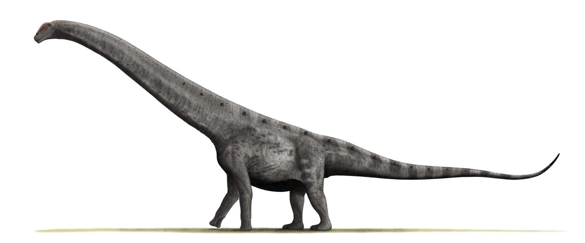

Desde el punto de vista de la taxonomía filogenética, los dinosaurios se definen generalmente como el grupo constituido por todos los descendientes del más reciente ancestro común (ACMR) del Triceratops y las aves modernas. También se ha propuesto que Dinosauria se defina con respecto al ACMR de Megalosaurus e Iguanodon, porque se trataba de dos de los tres géneros citados por Richard Owen al reconocer la Dinosauria. Ambas definiciones incluyen el mismo grupo de animales: «Dinosauria = Ornithischia + Saurischia», que abarca los terópodos (en su mayoría carnívoros bípedos y aves), anquilosaurianos (cuadrúpedos herbívoros acorazados), estegosaurianos (cuadrúpedos herbívoros con placas en la espalda), ceratopsianos (herbívoros cuadrúpedos con cuernos y volantes), ornitópodos (herbívoros bípedos o cuadrúpedos, incluyendo a los "picos de pato"), y sauropodomorfos (en su mayoría grandes cuadrúpedos herbívoros de cuello y cola largos). En el siglo xxi, las aves se reconocen como las únicas supervivientes del linaje de los dinosaurios terópodos. En la taxonomía tradicional, las aves eran consideradas una clase separada que había evolucionado a partir de los dinosaurios, un superorden distinto. Sin embargo, la mayoría de los paleontólogos contemporáneos relacionados con los dinosaurios rechazan la clasificación de estilo tradicional en favor de la nomenclatura filogenética; este enfoque requiere que, para que un grupo sea natural, todos los descendientes de los miembros del grupo deben también incluirse en el grupo. Las aves están, por lo tanto, consideradas dinosaurios y estos últimos, por consiguiente, no se han extinguido. Las aves se clasifican como pertenecientes al subgrupo Maniraptora, que son coelurosaurios, que a su vez son terópodos, que a su vez son saurisquios, y que a su vez son dinosaurios.
Argentinosaurus huinculensis (gr. «reptil de Argentina de Plaza Huincul») es la única especie conocida del género extinto Argentinosaurus de dinosaurio saurópodo titanosauriano que vivió a mediados del período Cretácico, entre hace 97 y 93,5 millones de años, en el Cenomaniense, en lo que hoy es América del Sur. Es uno de los animales terrestres más grandes de los que se tiene conocimiento actualmente. Pero los restos conocidos son escasos, por lo que no se puede estimar de manera precisa sus dimensiones corporales. De entre las diferentes estimaciones propuestas, el promedio sería de 33 metros de longitud y 67 toneladas de peso, lo que lo sitúa entre los mayores dinosaurios conocidos. Sus vestigios óseos fueron descubiertos por Guillermo Heredia, en una estancia rural cerca de Plaza Huincul, en la Patagonia argentina. Tras la denuncia, personal proveniente de distintas instituciones se encargaron de la extracción de las osamentas fosilizadas. El material se encuentra ahora bajo el resguardo del Museo Carmen Funes y del Museo de La Plata.Desde entonces, se han hecho diversos estudios para intentar descubrir sus características biológicas, tanto en el área biomecánica, taxonómica y morfológica, entre otras. El paisaje natural en que vivió era muy diferente al medio ambiente actual de la Patagonia argentina, era más exuberante y cálido, con la presencia de bosques templados o subtropicales y extensas planicies aluviales, opuesto al contemporáneo ambiente semiárido y seco.
